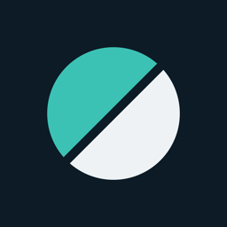

PlutoPrivacy Policy
Effective October 27, 2026
Pluto ("the app") is made by Peter Eaton. This policy explains what the app collects, why, and the choices you have. In short: your raw health data stays on your iPhone, only daily summaries are shared with friends you choose, and nothing is sold, used for advertising, or tracked across other apps.
Data from Google
When you choose "Continue with Google", you sign in with your Google Account and grant read-only access to your Google Health data. The app requests:
- Basic profile (name, email address, profile photo) to create your account and show your name to your groups.
- Google Health data: activity and fitness (steps, distance, Active Zone Minutes), sleep, health metrics (heart rate variability, resting heart rate, VO₂ max, breathing rate), profile (age), and settings (your paired tracker, its battery level, and last sync time).
You can untick any of these on Google's consent screen; the app keeps working without them and tells you what's missing.
What stays on your iPhone
Google Health data is read directly by the app on your iPhone. Detailed data (for example sleep stages and timing, VO₂ max, and your age) and the scores calculated from it, including biological age, sleep debt, and suggested bedtimes, are stored only on your device. Your Google access tokens are stored in the iPhone Keychain.
What is stored on our server
To let you compete with friends, the app stores a limited set of data with our backend provider, Supabase:
- Your account: a user ID, your email address, and the name and profile photo from your Google Account (you can change the name and photo in the app).
- Your goals (sleep and step goals) and units, visible only to you.
- Daily summaries: Recovery score, HRV, and resting heart rate; Sleep score and minutes asleep; Effort score, steps, Active Zone Minutes, and distance. Each is one number per day.
- Your time zone and tracker name, groups you create or join, your sharing choices, and reactions you send.
Group members can see your daily summaries only for categories you share with that group (Recovery, Sleep, Activity), and you can change this at any time. Access rules are enforced on the server for every request.
How the data is used
Only to provide the app's features: your scores, trends, streaks, challenges, group leaderboards, and feed. We do not sell your data, share it with advertisers or data brokers, use it for advertising, or use it to train AI models. The app contains no ads, analytics, or tracking SDKs.
Google API Services User Data Policy
Pluto's use and transfer of information received from Google APIs adheres to the Google API Services User Data Policy, including the Limited Use requirements. Data from Google is used only to provide and improve user-facing features of the app, is not transferred except as needed to provide those features (as described above), and is never used for advertising.
Service providers
Supabase (database and authentication hosting) processes the server-side data on our behalf. Google provides sign-in and the Google Health API. Data is sent over encrypted connections (HTTPS).
Retention and deletion
Server data is kept while your account exists. You can delete your account at any time in the app (Profile → Delete account), which permanently deletes your profile, your daily summaries, your sharing settings, and groups you own alone, and erases the data on your iPhone. You can also revoke Pluto's access to your Google Account at myaccount.google.com/permissions, or email us to request deletion.
Children
Pluto is not directed to children under 13, and we do not knowingly collect data from them.
Changes
If this policy changes, the new version will be posted here with a new effective date.
Contact
Peter Eaton · peterwilliameaton@gmail.com